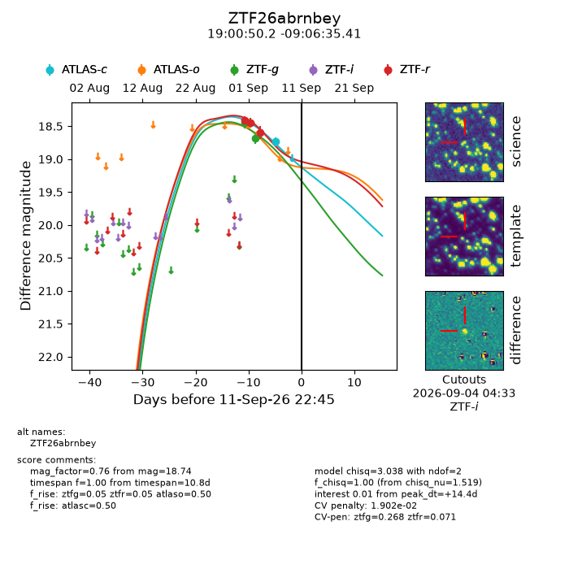
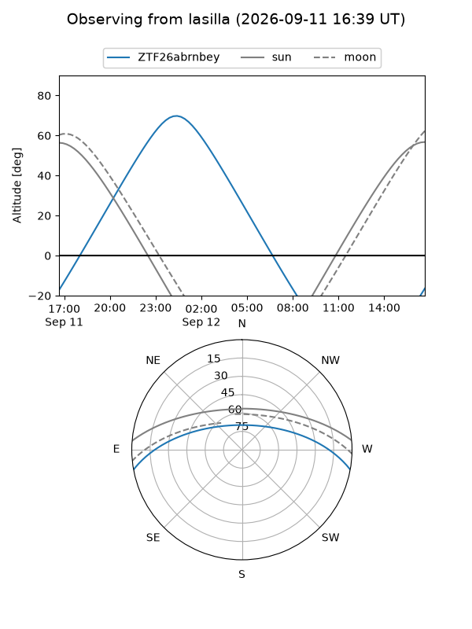
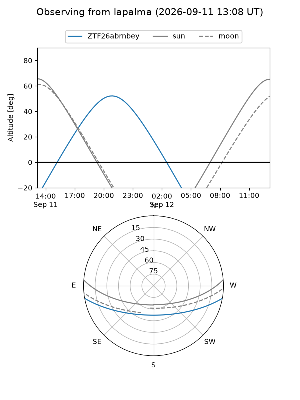
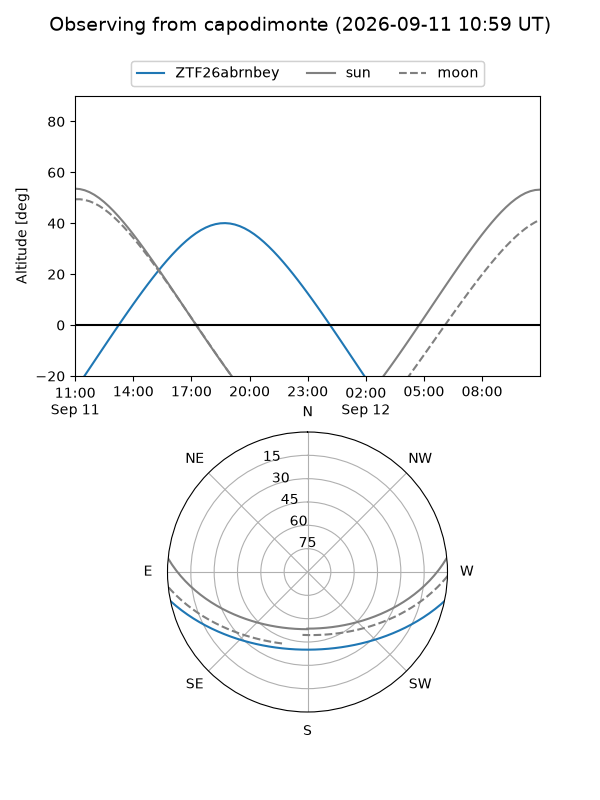
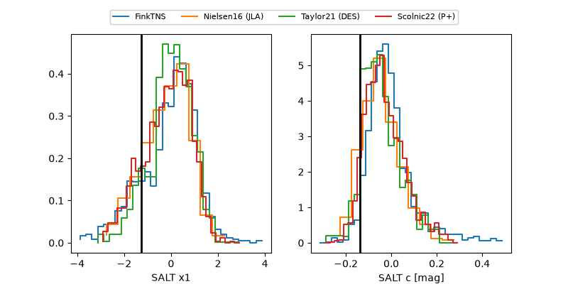

ZTF26abrnbey
Target ZTF26abrnbey at 2026-09-12 10:47
Aliases and brokers:
FINK-ZTF: ztf.fink-portal.org/ZTF26abrnbey
Lasair-ZTF: lasair-ztf.lsst.ac.uk/objects/ZTF26abrnbey
ALeRCE-ZTF: alerce.online/object/ZTF26abrnbey
Direct TNS query: direct search
alt names
ZTF26abrnbey (ztf,fink_ztf)
Coordinates:
equatorial (ra, dec) = 285.2091,-9.10984
equatorial (HMS+DMS) = 19:00:50.17,-09:06:35.41
galactic (l, b) = (25.8565,-6.21277)
Flags:
peak dt: +14.9
likely cv: !!
Photometry:
last atlasc=18.74, atlaso=18.48, ztfg=18.68, ztfr=18.60
1 atlasc, 1 atlaso, 2 ztfg, 3 ztfr detections
Lightcurve

Visibility



Additional plots
